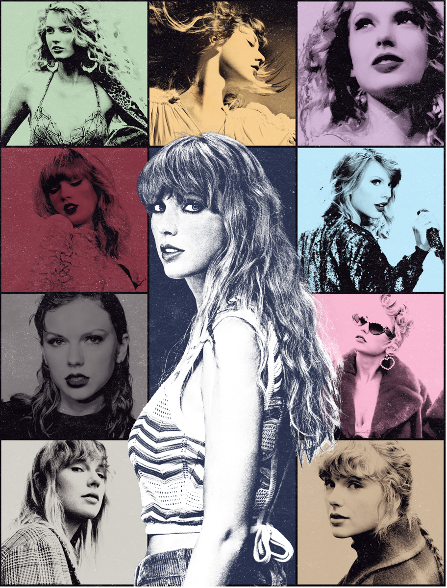
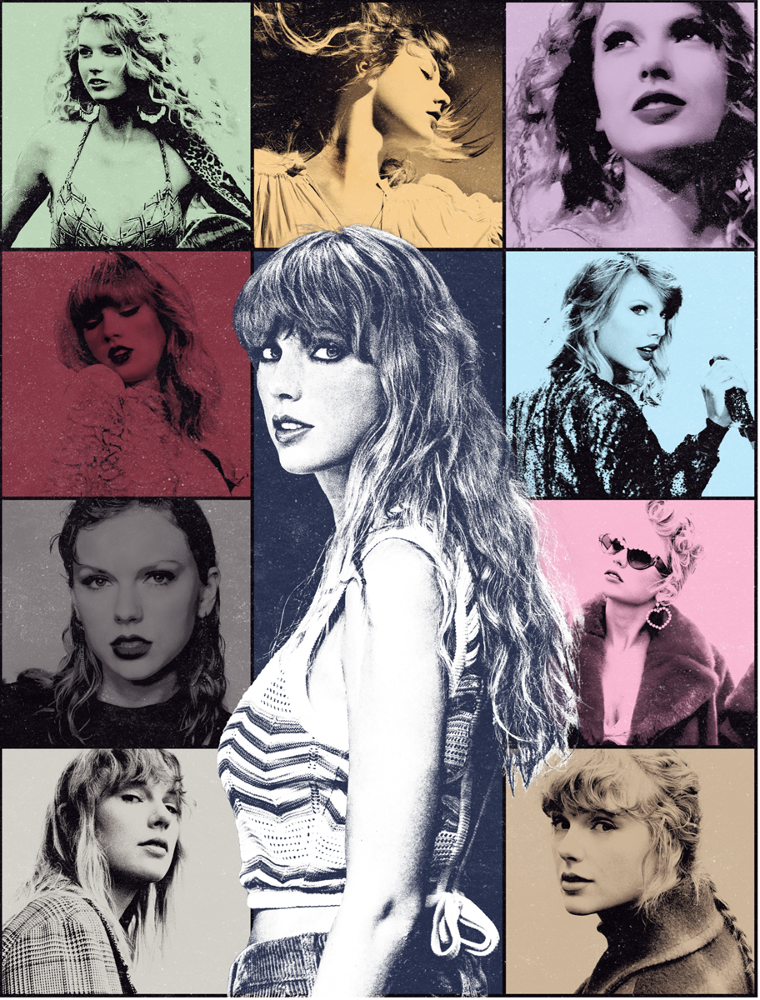

Taylor Swift është një këngëtare, kantautore dhe aktore amerikane, e lindur më 13 dhjetor 1989 në Reading, Pennsylvania. Ajo është një nga artistet më të suksesshme të muzikës pop, duke në një nga fenomenet më famshme të popit në historinë e muzikës e duke thyer rekorde të jashtëzakoshme.
Muzika e Taylor Swift përfshin zhanret pop, pop country, synth-pop dhe indie folk. Tekstet e saj shpesh fokusohen në tematikat e dashurisë, humbjeve, dëshpërimit, marrëdhënieve njerëzoredhe emocioneve personale. Ajo çka e bën Taylor Swift një artiste unike është fakti se ajo është njëkohësisht dhe kantautore e këngëve të saj, por edhe bashkëautore e bashkëpunimeve të saj muzikore me artistë të ndryshëm si Bon Iver dhe The National.
Taylor Swift ka fituar një shumëllojshmëri çmimesh muzikore në karrierën e saj, duke përfshirë 11 Grammy Awards, 34 Billboard Music Awards, dhe 1 Brit Award. Ajo është një nga artistete vetme në botë, muzika e së cilës shet me miliona albume dhe koncerte nëpër stadiume mbarëbotës.
"Taylor Swift është një nga fenomenet më të rralla të muzikës pop, një superstar që arriti të kalojë plotësisht nga muzika country në atë mainstream. Një tentativë e ndërmarrë edhe nga artistitë të tjerë si Dolly Parton dhe Willie Nelson, por e kthyer në transformim 360 gradë në rastin e Swift nga rrënjët e saj të country në muzikën pop, me albumin e saj "1989". Një "shndërrim i domosdoshëm" në fjalët e këngëtares, e cila është shprehur dhe në dokumentarin e saj "Miss Americana" se kufizimet dhe fryma maskiliste e shoqërisë dhe industrisë muzikore funksiojnë si barriera për suksesin e artistëve të shumtë dhe nuk tolerojnë kurrsesi. Sipas Swift artistët duhet të riformulojnë veten në mënyrë që të arrijnë ta fitojnë dhe ta ruajnën vëmendjen e publikut sa më gjatë, një sprovë e vështirë sidomos për femrat, të përballura me frymën maskiliste të industrisë muzikore. Situatë e cila frymëzoi këngën "The Man" e cila u publikua në vitin 2019 në albumin "Lover" dhe më vonë dhe "mirrorball" të publikuar në vitin 2020, në pandemi, në albumin "Foklore".
Taylor Swift mund të konsiderohet si këngëtarja dhe kantautorja më inteligjente dhe e shkathët e brezit të saj, një artiste që mund të kapërcejë pritshmëritë e publikut dhe të ndikojë e të mishërojë emocionet dhe përvojat e saj dhe miliona individëve në një këngë të vetme, qoftë kjo një melodi melankolike për kujtimet e së shkuarës apo një tablo për të shprehur emocionet e dashurisë. Këto aftësi të Swift u bënë të dukshme në hitet e saj të hershme, veçanërisht në këngën e parë të publikuar në vitin 2006 "Tim McGraw" dhe me publikimin e albumit të saj të dytë, "Fearless" në vitin 2008. Albumi "Speak Now", që u publikua rreth dy vjet më vonë, konsolidoi këtë sukses dhe e ngriti Swift në nivelin e një superylli muzikor. Fama e saj përjeton vetëm rritje nëpër albumet e rradhës - "Red" (2012), "1989" (2014), "Reputation" (2017), "Lover" (2019). Në momentin kur publiku ndërkombëtar filloi të mësohej me idenë e Swift si një ikonë popi, ajo sërish pësoi një transformim të papritur duke cekur ujërat e muzikës indie folk me albumet e vitit 2020, "folklore" dhe "evermore", vetëm për t'u rikthyer sërish në tetor të 2022-it me një album të ri synth-pop të titulluar "Midnights".
 
